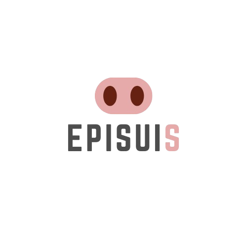

EPISUIS
Epidemiología aplicada con una mirada de sistema.
EPISUIS nace para trabajar donde los datos aislados dejan de ser suficientes: problemas sanitarios que involucran múltiples unidades, tiempos, territorios, diagnósticos y decisiones.

Quién está detrás
Alberto Jorge Galindo Barboza
Trabaja en investigación y epidemiología aplicada a salud porcina, con experiencia en diseño de estudios, análisis de riesgo, diagnóstico, epidemiología molecular, visualización de datos y diseño de sistemas digitales para vigilancia y gestión de información epidemiológica.
Forma de trabajo
Rigor suficiente para sostener decisiones. Flexibilidad suficiente para trabajar con problemas reales.
Alcance
Una base en México con alcance internacional.
EPISUIS está establecido en México y está concebido para colaborar con organizaciones de productores, instituciones, redes de producción, consorcios y proyectos nacionales o internacionales cuando la pregunta requiere epidemiología aplicada, integración de información o desarrollo de soluciones técnicas.
La colaboración puede ser completamente remota cuando los datos y objetivos lo permiten, o integrarse a proyectos de campo, redes de trabajo y equipos multidisciplinarios. El alcance se define antes de iniciar y no se asume que todos los problemas requieren la misma profundidad analítica.
Separar comunicación, evidencia y consultoría.
Las Notas técnicas funcionan como archivo público de explicaciones y recursos metodológicos. El perfil profesional documenta investigación, publicaciones y trayectoria. EPISUIS concentra la relación comercial y el desarrollo de proyectos de consultoría.
Colaboración
¿Hay un proyecto que necesita una mirada epidemiológica?
Comparte el contexto y la pregunta. Podemos comenzar por definir si EPISUIS es el enfoque adecuado.